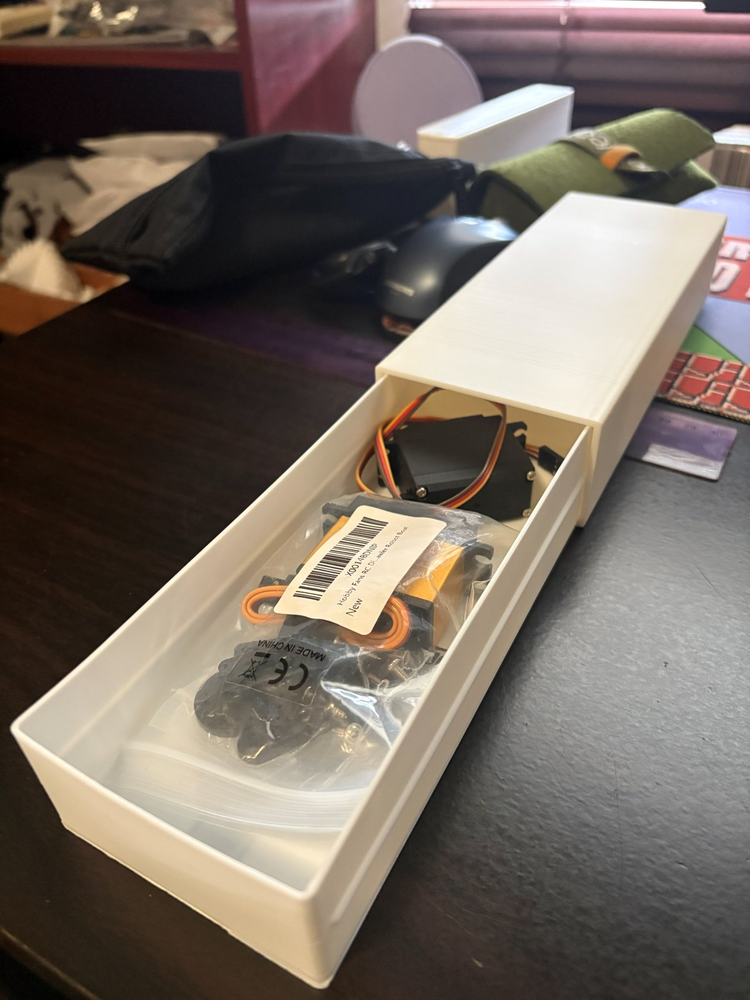

Project
3D Printed Pencil and Servo Storage Case
Personal 3D printed storage project that started as a pencil case and later became a servo motor storage case, shown with new photos.
Personal 3D printed storage case that started as a pencil case and later became useful for storing servo motors.
